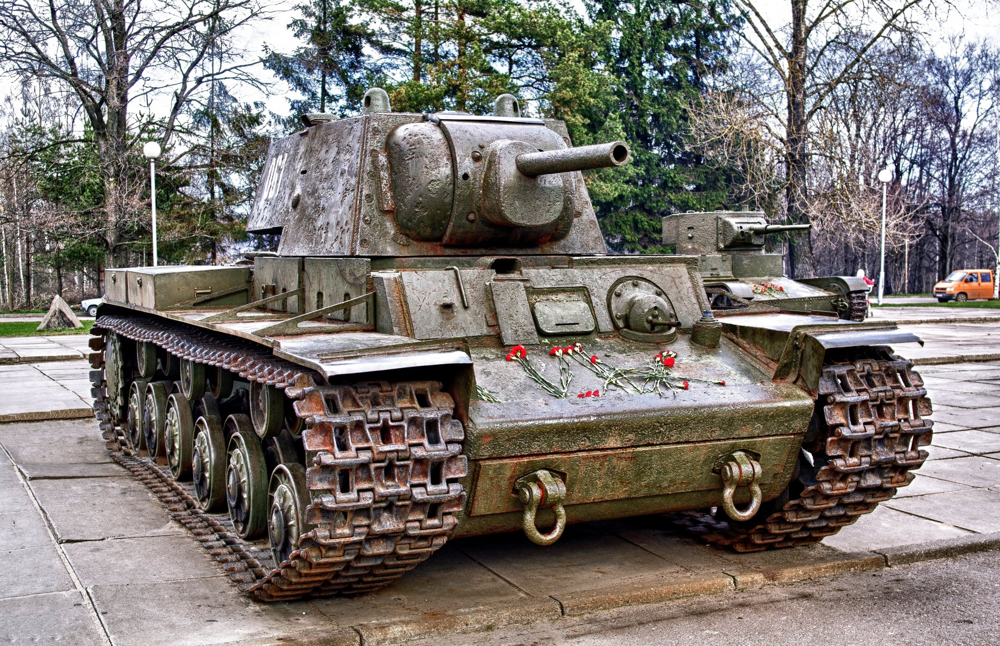

САУ «Фердинанд» была разработана в 1942—1943 годах, являясь во многом импровизацией на базе шасси непринятого на вооружение тяжёлого танка Tiger (P) разработки Фердинанда Порше. Дебютом «Фердинанда» стала Курская битва, где бронирование этой САУ продемонстрировало свою малую уязвимость для огня советской основной противотанковой и танковой артиллерии, но истребитель танков по сути был беззащитным перед пехотой противника, поскольку изначально не имел пулемёта. В дальнейшем эти машины были оснащены пулемётом и участвовали в боях на Восточном фронте и в Италии, закончив свой боевой путь в пригородах Берлина.
Из выпущенных с апреля по сентябрь 9 танков 4 использовались как опытные образцы, на которых тестировались различные агрегаты. На сегодняшний день доподлинно известно лишь об одном «Тигре» фирмы Порше, который участвовал в боях на Восточном фронте в 1944 году — это выпущенный в октябре Pz Bef Wg VI (P) (№ 150009) — в районе Галиции, куда прибыл в расположение 653-го тяжёлого батальона истребителей танков в качестве командирского танка с бортовым номером «003». Никаких подробностей первого и одновременно последнего случая боевого применения Pz.Bef.Wg.VI (P) не сохранилось. Можно лишь утверждать, что танк был уничтожен в ходе наступления советских войск: ещё 18 июля он числился в составе батальона, а 22 июля его, как и двух Bergepanzer VI, там уже не было.
23 декабря 1943 года Pz.Kpfw Maus отправился в первый испытательный пробег по территории завода Alkett. Пробег этот являлся нелегальным, так как разрешение на него получено не было. Первый пробег оказался и "испытанием на проходимость, так как территория завода была завалена обломками из-за бомбардировки за месяц до этого. Первые же метры показали, что опасения насчет поворотливости были напрасны. Танк легко обогнул узкий проход между кучами мусора. По итогам испытаний отмечалась легкость управления танком. Дальнейшие работы по выпуску десяти серийных танков были прекращены по указанию самого Гитлера, так как у Германии не хватало производственных мощностей для выпуска других, более важных видов оружия.
| Porsche | Henschel | Audi | ||||
|---|---|---|---|---|---|---|
| Panzerkannon | Pz.1 | Pz.1A | Pz.2 | Pz.5 | ||
| Pz.1B | Pz.1C | Pz.2A | Pz.6 | |||
| Pz.1D | Pz.1E | Pz.2B | Pz.7 | |||
| Panzerkampfwagen | Pz.3A | Pz.3B | Pz.4A | Pz.8 | ||
| Pz.3C | Pz.3D | Pz.4F | Ratte | |||
| Pz.3E | Pz.3F | |||||
В конце 1942 года по инициативе Гитлера начались работы над «танком прорыва» с максимально возможной бронезащитой. В создании машины приняли участие сразу несколько фирм: корпус и башню изготавливала фирма «Крупп», «Даймлер-Бенц» отвечала за двигательную установку, а «Сименс» — за элементы трансмиссии. Общая сборка велась на заводе фирмы «Алкетт». Проект «тип 205», разработанный Фердинандом Порше, был частично реализован в 1944 году в виде двух опытных образцов танка «Маус».
23 декабря 1943 года Pz.Kpfw Maus отправился в первый испытательный пробег по территории завода Alkett. Пробег этот являлся нелегальным, так как разрешение на него получено не было. Первый пробег оказался и испытанием на проходимость, так как территория завода была завалена обломками из-за бомбардировки за месяц до этого. Первые же метры показали, что опасения насчет поворотливости были напрасны. Танк легко обогнул узкий проход между кучами мусора. По итогам испытаний отмечалась легкость управления танком. Дальнейшие работы по выпуску десяти серийных танков были прекращены по указанию самого Гитлера, так как у Германии не хватало производственных мощностей для выпуска других, более важных видов оружия.
Необходимость создания тяжелого танка, несущего противоснарядное бронирование, хорошо понималась в СССР. Согласно отечественной военной теории, такие танки были необходимы для взламывания фронта противника и организации прорыва или преодоления укрепленных районов. Большинство армий развитых стран мира имели свои теории и практики преодоления мощных укрепленных позиций противника, опыт в этом был приобретен ещё во время Первой Мировой войны. Такие современные на тот момент укрепленные линии как, например, линия Мажино или линия Зигфрида считались даже теоретически непреодолимыми. Существовало ошибочное мнение, что танк создан в ходе Финской кампании для прорыва финских долговременных укреплений (линии Маннергейма). На самом деле танк начал проектироваться ещё в конце 1938 года, когда стало окончательно понятно, что концепция многобашенного тяжёлого танка, подобного Т-35, является тупиковой. Было очевидно, что наличие большого количества башен хоть и является преимуществом в огневой мощи, но неизбежно влечёт за собой побочные эффекты в виде усложнения конструкции и как следствие её удорожания, скорости изготовления и меньшей надёжности. А гигантские размеры танка лишь утяжеляют и демаскируют его и не позволяют использовать достаточно толстую броню. Инициатором создания танка был начальник АБТУ РККА комкор Д. Г. Павлов.
В конце 1930-х были предприняты попытки разработать танк уменьшенных (по сравнению с Т-35) размеров, но с более толстой бронёй. Однако конструкторы так и не решились отказаться от использования нескольких башен: считалось, что одна пушка будет бороться с пехотой и подавлять огневые точки, а вторая обязательно должна быть противотанковой — для борьбы с бронетехникой.
Новая страница